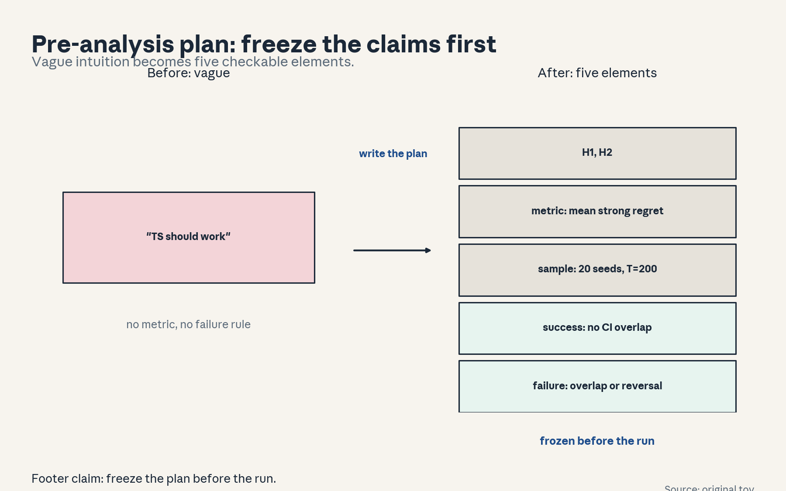
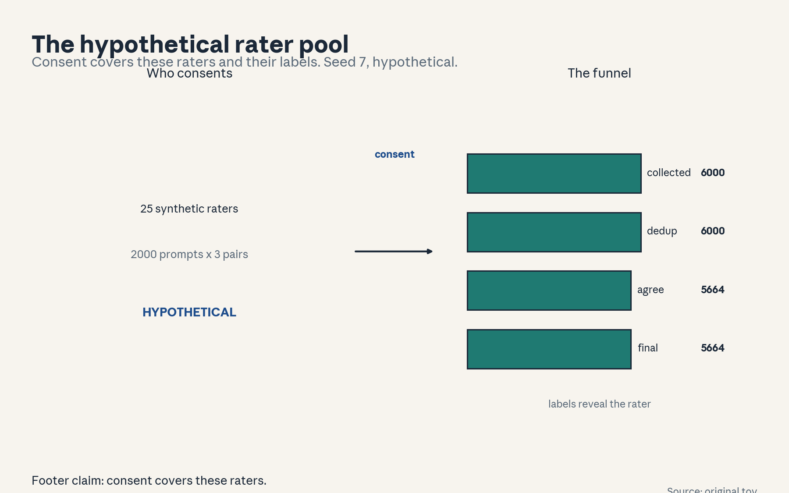
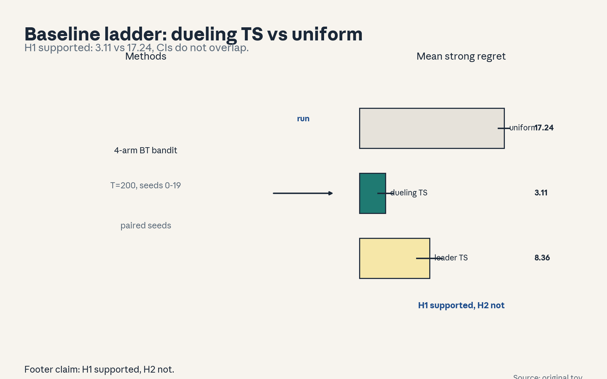
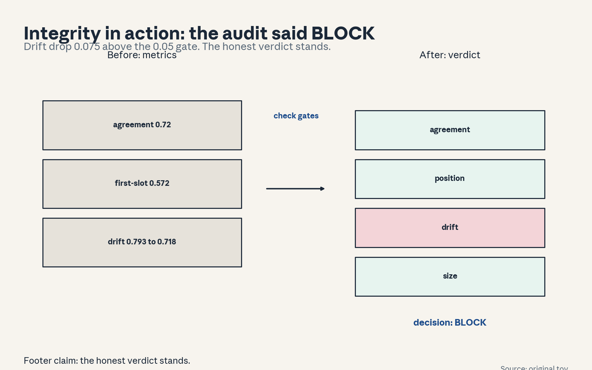
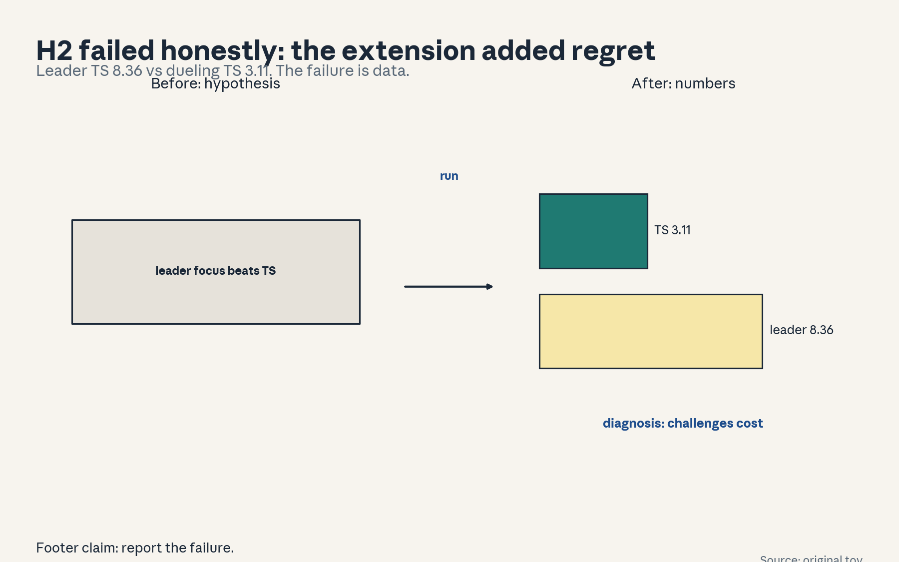
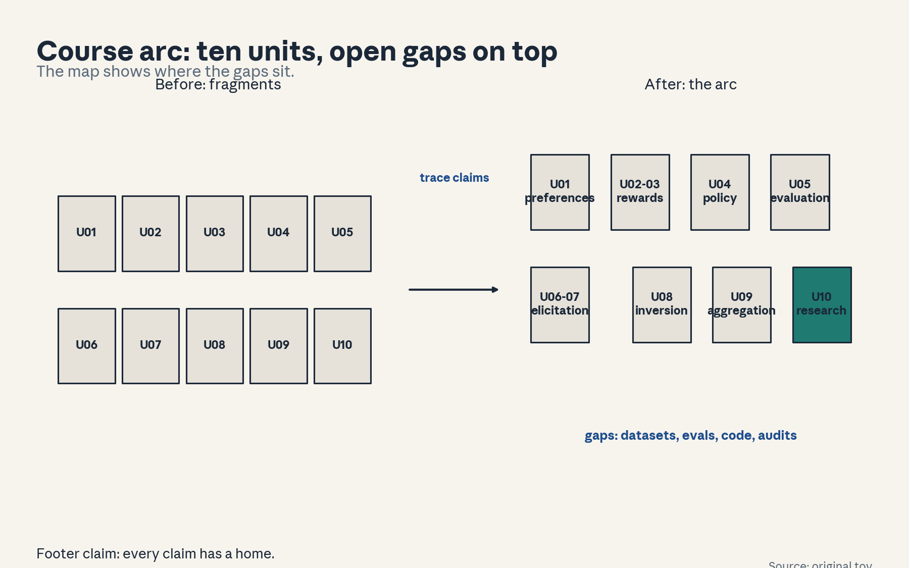

U10 · Research projects and oral mastery
UU10: research projects and oral mastery
Prerequisites: Bridges P21-P24, U07-C09 and U07-C10 for the dueling baseline, U09-C12 for the welfare framing.. Local remediation opens this lesson.
Provenance
Session S18 (“Summary and practical tips”, 30 Nov 2026) is PLANNED. All twelve concepts are taught as independent theory: PLANNED / SOURCE ATTRIBUTION PENDING. The capstone runs are original simulations on this machine.
Local remediation: Run the uniform baseline first, it calibrates every claim later.
If dueling TS theory is shaky, re-read U07 before the replication.
Russian-doll ladder for the major mechanism (thesis to plan to experiment to verdict)
- Shell 0: U01 preference models
- Shell 1: U07 dueling bandits
- Shell 2: U09 aggregation
Not-yet-understood dependency list
- real human preference datasets
- a published replication
cs329h-U10-C01: pre-analysis plan
Contract 1. Source mapping, scope, objectives, dependencies. PLANNED / SOURCE ATTRIBUTION PENDING (S01). Objective: write a research plan before running code. Depends on P21.
Contract 2. Motivating question and tiny toy. Question: how do you stop yourself from p-hacking? Toy: the capstone A plan (frozen before the run).
Contract 3. Plain-language mental model. A pre-analysis plan names the hypotheses, the metric, the sample, the success rule, and the failure rule before any number exists. It turns “it worked” into a checkable claim.
Contract 4. Variables, units, shapes, assumptions. Plan elements: H (hypotheses), M (metric), N (sample), S (success rule), F (failure rule). Assumption: the plan is timestamped before the data run.
Contract 5. Justified derivation or mechanism. Capstone A plan: H1 (dueling TS < uniform), H2 (leader TS < dueling TS), metric mean cumulative strong regret, T=200, 20 seeds, success = lower mean with non-overlapping 95 percent CIs, failure = overlap or reversal.
Contract 6. Computed numerical example. The plan text (above). Same as capstones/replicate_dueling_ts.py docstring.
Contract 7. Algorithm and minimal implementation. Write the five-element plan. Ten lines.
Contract 8. Correctness checks and expected output. Check: an independent reader could run it. Check: the failure rule is written before the numbers. Expected: the frozen plan.
Contract 9. Complexity, memory, statistical efficiency, stability, costs. O(1). Discipline, not compute.
Contract 10. Nearest alternatives and selection boundaries. Alternative: no plan (claims shift with the results). Alternative: plan after seeing data (fraud). Choose the frozen plan.
Contract 11. Failure case, broken assumption, counterexample. Failure: the plan is vague enough to declare victory anyway. Counterexample: “TS performs well” with no metric.
Contract 12. Research reading and falsifiable extension. Extension: preregister a real replication. Falsifiable: the plan either predicts the outcome or does not.
Contract 13. Assessment. Breadth: name the five elements. Oral ladder through the capstone plan. Transfer: an A/B test. Failure diagnosis: “our method works” with no baseline. Explain. Counterfactual: what if data were free? Research: preregistration.
Contract 14. Lab and exercises. Exercises: (E1) name the elements. (E2) write the capstone A success rule. (E3) spot the vague plan. Keys in answer_keys/u10_keys.md.
Contract 15. Visual units, provenance, accessibility, audit rows. Figure visuals/u10_f01.png: lesson plate, source original plan, alt text “Before: vague claim. After: five elements (hypotheses, metric, sample, success rule, failure rule), frozen before the run.” Audit: before state vague, after state the plan, rule named. No conflict.

cs329h-U10-C02: literature review
Contract 1. Source mapping, scope, objectives, dependencies. PLANNED / SOURCE ATTRIBUTION PENDING (S01). Objective: read the baseline literature before proposing. Depends on P22.
Contract 2. Motivating question and tiny toy. Question: what already exists? Toy: the dueling-bandit literature behind capstone A.
Contract 3. Plain-language mental model. A literature review finds the closest published methods, re-derives their key result, and implements the simplest one. Your contribution is measured against the strongest baseline, not the weakest.
Contract 4. Variables, units, shapes, assumptions. The reading contract: (1) the problem statement, (2) the theorem, (3) the proof sketch, (4) the experimental setup. Assumption: you read the proof, not just the abstract.
Contract 5. Justified derivation or mechanism. Worked: dueling bandits. Problem: learn the best arm from pairwise comparisons. Key result: Thompson sampling achieves low regret empirically. Setup: Bradley-Terry simulator, 4 arms.
Contract 6. Computed numerical example. Worked: the four contract elements above. Same as the capstone README.
Contract 7. Algorithm and minimal implementation. Fill the reading contract for one paper. Table template.
Contract 8. Correctness checks and expected output. Check: every cell is specific (numbers, not adjectives). Expected: the completed table.
Contract 9. Complexity, memory, statistical efficiency, stability, costs. O(1).
Contract 10. Nearest alternatives and selection boundaries. Alternative: skim abstracts (misses the mechanism). Alternative: skip reading (reinvent badly). Choose the contract.
Contract 11. Failure case, broken assumption, counterexample. Failure: the baseline is misread (wrong metric). Counterexample: compare cumulative regret to simple regret.
Contract 12. Research reading and falsifiable extension. Extension: replicate the baseline result. Falsifiable: the numbers either match or they do not.
Contract 13. Assessment. Breadth: state the contract. Oral ladder through the dueling baseline. Transfer: a new drug trial. Failure diagnosis: “we beat the state of the art” against a weak baseline. Explain. Counterfactual: what if no baseline existed? Research: survey methods.
Contract 14. Lab and exercises. Exercises: (E1) state the contract. (E2) fill it for dueling TS. (E3) spot the metric mismatch. Keys in answer_keys/u10_keys.md.
Contract 15. Visual units, provenance, accessibility, audit rows. Text unit: the table is the artifact. No plate. Logged.
cs329h-U10-C03: hypothesis
Contract 1. Source mapping, scope, objectives, dependencies. PLANNED / SOURCE ATTRIBUTION PENDING (S01). Objective: turn an intuition into a falsifiable hypothesis. Depends on C01, C02.
Contract 2. Motivating question and tiny toy. Question: what exactly do you predict? Toy: H2 (leader-focused TS beats vanilla dueling TS).
Contract 3. Plain-language mental model. A hypothesis names the intervention, the outcome, the direction, and the condition. “Leader-focused dueling TS has lower mean strong regret than vanilla dueling TS on the 4-arm BT bandit” is falsifiable, “a better acquisition helps” is not.
Contract 4. Variables, units, shapes, assumptions. Hypothesis form: intervention I, outcome O, direction D, condition K. Assumption: the condition is checkable.
Contract 5. Justified derivation or mechanism. H2 as written above. It failed (leader TS mean 8.36 vs TS 3.11). The failure is data: challenges are costly.
Contract 6. Computed numerical example. Worked: the two hypotheses H1 and H2 with their directions. Same numbers as the capstone results.
Contract 7. Algorithm and minimal implementation. Rewrite a vague intuition as I/O/D/K. Template.
Contract 8. Correctness checks and expected output. Check: the direction could be wrong (it was). Expected: the rewritten hypothesis.
Contract 9. Complexity, memory, statistical efficiency, stability, costs. O(1).
Contract 10. Nearest alternatives and selection boundaries. Alternative: vague intuition (cannot fail). Alternative: many hypotheses (multiple-comparison fishing). Choose one sharp hypothesis per experiment.
Contract 11. Failure case, broken assumption, counterexample. Failure: the hypothesis is true by definition (circular). Counterexample: “the method that picks better arms gets lower regret”.
Contract 12. Research reading and falsifiable extension. Extension: test H2 variants (different focus rules). Falsifiable: each variant either beats TS or does not.
Contract 13. Assessment. Breadth: state the four parts. Oral ladder through H2. Transfer: a product feature test. Failure diagnosis: “our intuition was confirmed” with no direction stated. Explain. Counterfactual: what if the direction were unstated? Research: hypothesis design.
Contract 14. Lab and exercises. Exercises: (E1) state the form. (E2) write H2 in the form. (E3) spot the circular hypothesis. Keys in answer_keys/u10_keys.md.
Contract 15. Visual units, provenance, accessibility, audit rows. Text unit: the hypothesis rewrites are the artifact. No plate. Logged.
cs329h-U10-C04: data consent
Contract 1. Source mapping, scope, objectives, dependencies. PLANNED / SOURCE ATTRIBUTION PENDING (S01). Objective: design consent for preference-data collection. Depends on P24, U01-C10.
Contract 2. Motivating question and tiny toy. Question: the raters label 6000 pairs. What did they agree to? Toy: the consent form for the capstone B rater pool (hypothetical).
Contract 3. Plain-language mental model. Data consent for preference collection: purpose (what the data trains), voluntariness, withdrawal (can a rater leave and take their labels?), data use (who sees the labels), retention. Preference data is opinion data: it reveals the rater.
Contract 4. Variables, units, shapes, assumptions. The consent contract: purpose, voluntary participation, withdrawal terms, data-use limits, retention period. Assumption: raters can read the form.
Contract 5. Justified derivation or mechanism. Worked: the hypothetical rater pool. Purpose: train a preference model. Withdrawal: labels removed within 30 days (HYPOTHETICAL terms). Use: research only. Retention: 2 years (HYPOTHETICAL). Every term is labeled hypothetical.
Contract 6. Computed numerical example. Worked: the five contract elements above. Same structure as the capstone B README.
Contract 7. Algorithm and minimal implementation. Write the consent form. Template.
Contract 8. Correctness checks and expected output. Check: every element has a named term. Expected: the completed form.
Contract 9. Complexity, memory, statistical efficiency, stability, costs. O(1). Governance, not compute.
Contract 10. Nearest alternatives and selection boundaries. Alternative: no consent (exploitation). Alternative: a click-through nobody reads (theater). Choose the readable contract.
Contract 11. Failure case, broken assumption, counterexample. Failure: withdrawal is promised but technically impossible (labels already in the model). Counterexample: “withdraw anytime” with no removal mechanism.
Contract 12. Research reading and falsifiable extension. Extension: test rater comprehension of the form. Falsifiable: quiz the raters.
Contract 13. Assessment. Breadth: name the five elements. Oral ladder through the withdrawal problem. Transfer: a medical trial. Failure diagnosis: raters revolt over data use. Explain. Counterfactual: what if data were public? Research: consent design.
Contract 14. Lab and exercises. Lab U10 task 3 writes the consent form. Exercises: (E1) name the elements. (E2) write the withdrawal term. (E3) spot the impossible promise. Keys in answer_keys/u10_keys.md.
Contract 15. Visual units, provenance, accessibility, audit rows. Figure visuals/u10_f04.png: lesson plate, source original synthetic run, alt text “25 synthetic raters, 2000 prompts x 3 pairs. Funnel 6000 to 5664. Labels reveal the rater.” Audit: before state who is labeled, after state the consent scope, rule named. No conflict.

cs329h-U10-C05: method baselines
Contract 1. Source mapping, scope, objectives, dependencies. PLANNED / SOURCE ATTRIBUTION PENDING (S02). Objective: run the baseline ladder and read the numbers. Depends on C01-C04, U07-C07.
Contract 2. Motivating question and tiny toy. Question: did the replication work? Toy: capstone A numbers.
Contract 3. Plain-language mental model. Method baselines: uniform (17.24, CI [16.56, 17.92]), dueling TS (3.11, CI [2.23, 3.99]), leader TS (8.36, CI [6.86, 9.87]). H1 supported, H2 not supported.
Contract 4. Variables, units, shapes, assumptions. Verdict rule: lower mean plus non-overlapping 95 percent CIs. Assumption: 20 seeds give honest CIs.
Contract 5. Justified derivation or mechanism. H1: TS beats uniform by 14.13 with no CI overlap. H2: leader TS is worse than TS by 5.25. The extension adds regret.
Contract 6. Computed numerical example. The numbers above (computed by replicate_dueling_ts.py). Same numbers as figure u10_f02 and the capstone README.
Contract 7. Algorithm and minimal implementation. Compute means, SDs, CIs from the per-seed regrets. Ten lines.
Contract 8. Correctness checks and expected output. Check: the JSON matches the figure. Expected: the verdicts.
Contract 9. Complexity, memory, statistical efficiency, stability, costs. O(seeds x T).
Contract 10. Nearest alternatives and selection boundaries. Alternative: eyeball the curves (misses the overlap). Alternative: p-values without the effect size (thin). Choose means plus CIs.
Contract 11. Failure case, broken assumption, counterexample. Failure: the CIs are read as hard bounds. Counterexample: “the true mean cannot be 4.0” (it can, CI is a procedure).
Contract 12. Research reading and falsifiable extension. Extension: test on 8 arms (does the ordering hold?). Falsifiable: re-run.
Contract 13. Assessment. Breadth: state the verdicts. Oral ladder through the numbers. Transfer: a clinical trial readout. Failure diagnosis: overlapping CIs claimed as a win. Explain. Counterfactual: what if seeds were 5? Research: replication standards.
Contract 14. Lab and exercises. Lab U10 tasks 4-5 re-run the ladder. Exercises: (E1) state the verdicts. (E2) compute one CI. (E3) argue the CI misreading. Keys in answer_keys/u10_keys.md.
Contract 15. Visual units, provenance, accessibility, audit rows. Figure visuals/u10_f02.png: lesson plate, source original simulation, alt text “Bars with CIs: uniform 17.24, dueling TS 3.11, leader TS 8.36. H1 supported, H2 not.” Audit: before state plan, after state verdicts, rule named. No conflict.

cs329h-U10-C06: uncertainty
Contract 1. Source mapping, scope, objectives, dependencies. PLANNED / SOURCE ATTRIBUTION PENDING (S02). Objective: quantify what the numbers do not know. Depends on C05.
Contract 2. Motivating question and tiny toy. Question: the mean is 3.11. How sure are we? Toy: the CI machinery behind capstone A.
Contract 3. Plain-language mental model. Uncertainty quantification: report the mean, the SD, the SE, and the 95 percent CI for every number. State what varies (seeds) and what does not (the environment). TS: mean 3.11, SD 2.01, CI [2.23, 3.99].
Contract 4. Variables, units, shapes, assumptions. CI = mean +/- 1.96 x SD / sqrt(n), n = 20 seeds. Assumption: seeds are exchangeable, the environment is fixed.
Contract 5. Justified derivation or mechanism. Worked: uniform SD 1.55 (tight), TS SD 2.01, leader SD 3.43 (wide: the extension is unstable). The SD is information, not noise to hide.
Contract 6. Computed numerical example. Worked: the three SD/CI rows above (computed). Same numbers as results_cap_a.json.
Contract 7. Algorithm and minimal implementation. Compute SD, SE, CI from per-seed values. Ten lines.
Contract 8. Correctness checks and expected output. Check: the SD is reported, not just the mean. Expected: the uncertainty table.
Contract 9. Complexity, memory, statistical efficiency, stability, costs. O(n).
Contract 10. Nearest alternatives and selection boundaries. Alternative: mean only (hides the instability). Alternative: min/max (no procedure). Choose mean plus SD plus CI.
Contract 11. Failure case, broken assumption, counterexample. Failure: the wide SD is treated as a bug to fix by cherry-picking seeds. Counterexample: drop the worst 5 seeds and “improve” the CI.
Contract 12. Research reading and falsifiable extension. Extension: bootstrap the CI (falsifiable: compare).
Contract 13. Assessment. Breadth: state what varies and what does not. Oral ladder through the leader SD. Transfer: a poll margin of error. Failure diagnosis: the mean is quoted without the SD. Explain. Counterfactual: what if n were 200? Research: uncertainty reporting.
Contract 14. Lab and exercises. Lab U10 task 5 builds the uncertainty table. Exercises: (E1) state the CI formula. (E2) compute the leader SE. (E3) argue the cherry-picking failure. Keys in answer_keys/u10_keys.md.
Contract 15. Visual units, provenance, accessibility, audit rows. Text unit: the uncertainty table is the artifact. No plate. Logged.
cs329h-U10-C07: reproducible code
Contract 1. Source mapping, scope, objectives, dependencies. PLANNED / SOURCE ATTRIBUTION PENDING (S02). Objective: make the experiment re-runnable by a stranger. Depends on C05, C06.
Contract 2. Motivating question and tiny toy. Question: can someone re-run capstone A? Toy: the two-run check (identical JSON).
Contract 3. Plain-language mental model. Reproducible code: fixed seeds, pinned environment, committed scripts, outputs written to files. The check: run twice, diff the outputs. Capstone A passed: identical JSON across runs.
Contract 4. Variables, units, shapes, assumptions. The reproducibility contract: seeds fixed, dependencies named, one command reproduces the numbers. Assumption: the machine runs the same code.
Contract 5. Justified derivation or mechanism. Worked: capstones/replicate_dueling_ts.py. One command reproduces results_cap_a.json and figures/cap_a_regret.png. The two-run diff was empty.
Contract 6. Computed numerical example. Worked: the contract elements above. Same as the capstone README.
Contract 7. Algorithm and minimal implementation. Run the two-run check. Five commands.
Contract 8. Correctness checks and expected output. Check: the diff is empty. Expected: REPRODUCIBLE.
Contract 9. Complexity, memory, statistical efficiency, stability, costs. O(2 x run).
Contract 10. Nearest alternatives and selection boundaries. Alternative: “runs on my machine” (unverifiable). Alternative: notebooks with hidden state (order-dependent). Choose scripts with fixed seeds.
Contract 11. Failure case, broken assumption, counterexample. Failure: a dependency updates silently and the numbers drift. Counterexample: NumPy changes a sampler, the JSON differs. Fix: record the version.
Contract 12. Research reading and falsifiable extension. Extension: run on a second machine. Falsifiable: the diff.
Contract 13. Assessment. Breadth: state the contract. Oral ladder through the two-run check. Transfer: a clinical analysis pipeline. Failure diagnosis: the numbers drift between runs. Explain. Counterfactual: what if seeds were unfixable? Research: reproducibility standards.
Contract 14. Lab and exercises. Lab U10 task 6 runs the two-run check. Exercises: (E1) state the contract. (E2) run the check. (E3) argue the silent-dependency failure. Keys in answer_keys/u10_keys.md.
Contract 15. Visual units, provenance, accessibility, audit rows. Text unit: the check log is the artifact. No plate. Logged.
cs329h-U10-C08: contribution statements
Contract 1. Source mapping, scope, objectives, dependencies. PLANNED / SOURCE ATTRIBUTION PENDING (S01). Objective: state what is new relative to the baseline. Depends on C02, C05.
Contract 2. Motivating question and tiny toy. Question: what did capstone A contribute? Toy: the contribution sentence.
Contract 3. Plain-language mental model. A contribution statement names the delta over the strongest baseline: what you did, what changed, what the evidence is. “We replicated dueling TS vs uniform on a 4-arm BT bandit and falsified the leader-focus extension (8.36 vs 3.11).”
Contract 4. Variables, units, shapes, assumptions. The contribution form: baseline B, intervention I, evidence E, scope S. Assumption: the baseline is the strongest known (C02).
Contract 5. Justified derivation or mechanism. Worked: B = dueling TS (C02 literature). I = leader-focused dueling. E = mean 8.36 vs 3.11, non-overlapping CIs, 20 seeds. S = 4-arm BT simulation (not humans).
Contract 6. Computed numerical example. Worked: the four form elements above. Same numbers as the capstone JSON.
Contract 7. Algorithm and minimal implementation. Write the contribution sentence. Template.
Contract 8. Correctness checks and expected output. Check: the scope names what is NOT claimed. Expected: the completed sentence.
Contract 9. Complexity, memory, statistical efficiency, stability, costs. O(1).
Contract 10. Nearest alternatives and selection boundaries. Alternative: “novel method” with no baseline (unmeasurable). Alternative: claim beyond the scope (humans). Choose the bounded statement.
Contract 11. Failure case, broken assumption, counterexample. Failure: the contribution is the baseline relabeled. Counterexample: “we propose TS for duels” (it exists).
Contract 12. Research reading and falsifiable extension. Extension: have a peer grade the statement. Falsifiable by review.
Contract 13. Assessment. Breadth: state the form. Oral ladder through the capstone statement. Transfer: a patent claim. Failure diagnosis: the statement claims human generality. Explain. Counterfactual: what if no baseline existed? Research: novelty assessment.
Contract 14. Lab and exercises. Lab U10 task 7 writes the statement. Exercises: (E1) state the form. (E2) write the scope. (E3) spot the relabeled baseline. Keys in answer_keys/u10_keys.md.
Contract 15. Visual units, provenance, accessibility, audit rows. Text unit: the statement is the artifact. No plate. Logged.
cs329h-U10-C09: integrity/reflection/impact
Contract 1. Source mapping, scope, objectives, dependencies. PLANNED / SOURCE ATTRIBUTION PENDING (S01). Objective: practice research integrity: reflect on limits, state impact. Depends on C01-C08.
Contract 2. Motivating question and tiny toy. Question: what could go wrong if this research were used? Toy: the capstone A reflection.
Contract 3. Plain-language mental model. Integrity: report the negative result (C11), do not p-hack (C01). Reflection: the limits (simulated BT, 4 arms, no humans). Impact: who benefits and who could be harmed (better elicitation helps assistants, the same methods optimize manipulation).
Contract 4. Variables, units, shapes, assumptions. The reflection form: integrity (what was reported honestly), limits (what the experiment cannot say), impact (who is affected). Assumption: the reflection is written, not implied.
Contract 5. Justified derivation or mechanism. Worked: integrity (H2 failure reported with numbers). Limits (no human data). Impact (preference elicitation at scale concentrates influence over what users see).
Contract 6. Computed numerical example. Worked: the three form elements above. Same numbers as the capstone results.
Contract 7. Algorithm and minimal implementation. Write the reflection. Template.
Contract 8. Correctness checks and expected output. Check: the negative result appears. Expected: the completed reflection.
Contract 9. Complexity, memory, statistical efficiency, stability, costs. O(1).
Contract 10. Nearest alternatives and selection boundaries. Alternative: impact as boilerplate (“no foreseeable harm”). Alternative: no reflection (limits discovered by reviewers). Choose the written form.
Contract 11. Failure case, broken assumption, counterexample. Failure: the reflection is written after acceptance pressure kills it. Counterexample: the H2 failure quietly dropped from the draft.
Contract 12. Research reading and falsifiable extension. Extension: none, practice.
Contract 13. Assessment. Breadth: state the form. Oral ladder through the impact claim. Transfer: an IRB statement. Failure diagnosis: “no foreseeable harm” for a persuasion method. Explain. Counterfactual: what if the method only helped? Research: impact assessment.
Contract 14. Lab and exercises. Lab U10 task 7 includes the reflection. Exercises: (E1) state the form. (E2) write the limits. (E3) spot the dropped negative result. Keys in answer_keys/u10_keys.md.
Contract 15. Visual units, provenance, accessibility, audit rows. Figure visuals/u10_f05.png: lesson plate, source original audit, alt text “Gates: agreement pass, position pass, drift fail, size pass. Decision BLOCK.” Audit: before state metrics, after state the verdict, rule named. No conflict.

cs329h-U10-C10: quizzes/oral formats
Contract 1. Source mapping, scope, objectives, dependencies. PLANNED / SOURCE ATTRIBUTION PENDING (S01). Objective: prepare for oral assessment formats. Depends on the whole course.
Contract 2. Motivating question and tiny toy. Question: how is oral mastery tested? Toy: the 8-rung ladder drill.
Contract 3. Plain-language mental model. Oral formats: the quiz (timed, written), the ladder drill (one claim, eight follow-ups: define, toy, derive, implement and complexity, compare, debug, critique, design), the demo (one screen, one claim, live run, the decision).
Contract 4. Variables, units, shapes, assumptions. The ladder contract: one claim, eight rungs, no notes after rung 2. Assumption: the claim is from this course.
Contract 5. Justified derivation or mechanism. Worked: claim “H1 supported”. Define strong regret. Toy: the 4-arm bandit. Derive the verdict rule. Implement: the CI code. Compare: uniform. Debug: unpaired seeds. Critique: simulated BT, not humans. Design: the human replication.
Contract 6. Computed numerical example. Worked: the eight rungs above. Same as interview/oral-defenses.md ladder 1.
Contract 7. Algorithm and minimal implementation. Run the drill with a partner. Instructions.
Contract 8. Correctness checks and expected output. Check: every rung answered without notes. Expected: the completed ladder.
Contract 9. Complexity, memory, statistical efficiency, stability, costs. O(1).
Contract 10. Nearest alternatives and selection boundaries. Alternative: slides for every rung (hides gaps). Alternative: memorized script (breaks on follow-ups). Choose the drill.
Contract 11. Failure case, broken assumption, counterexample. Failure: the drill stops at rung 3 (derivation skipped). Counterexample: “the math is in the paper”.
Contract 12. Research reading and falsifiable extension. Extension: record and review (falsifiable by playback).
Contract 13. Assessment. Breadth: name the three formats and the eight rungs. Oral ladder through the claim. Transfer: a thesis defense. Failure diagnosis: the speaker cannot derive the claim. Explain. Counterfactual: what if notes were allowed? Research: oral assessment.
Contract 14. Lab and exercises. Lab U10 task 8 designs a ladder. Exercises: (E1) name the rungs. (E2) write the debug rung. (E3) spot the skipped derivation. Keys in answer_keys/u10_keys.md.
Contract 15. Visual units, provenance, accessibility, audit rows. Figures visuals/u10_f06.png (the ladder) and u10_f07.png (the demo checklist): lesson plates, source original drill, alt text “Eight rungs: define, toy, derive, implement, compare, debug, critique, design. Demo: one screen, one claim, live run, the decision.” Audit: before state the claim, after state the defense, rule named. No conflict.
cs329h-U10-C11: negative results
Contract 1. Source mapping, scope, objectives, dependencies. PLANNED / SOURCE ATTRIBUTION PENDING (S02). Objective: report a failed hypothesis honestly. Depends on C05, C06.
Contract 2. Motivating question and tiny toy. Question: H2 failed. What now? Toy: the leader-TS extension.
Contract 3. Plain-language mental model. A negative result is a result: the leader-focused extension achieved 8.36 vs 3.11 for vanilla TS. The honest report says the acquisition design added regret, and hypothesizes why (challenges cost strong regret).
Contract 4. Variables, units, shapes, assumptions. The negative-result report: (1) the hypothesis, (2) the numbers, (3) the diagnosis, (4) what it rules out. Assumption: the experiment was sound (C01-C04 hold).
Contract 5. Justified derivation or mechanism. Report: H2 not supported. Numbers 8.36 vs 3.11, CIs [6.86, 9.87] vs [2.23, 3.99]. Diagnosis: forcing duels against the least-tried challenger spends rounds on weak arms. Ruled out: “any leader focus helps”.
Contract 6. Computed numerical example. Worked: the four-part report above. Same numbers as the capstone JSON.
Contract 7. Algorithm and minimal implementation. Write the negative-result report. Template.
Contract 8. Correctness checks and expected output. Check: the hypothesis is not quietly dropped. Expected: the completed report.
Contract 9. Complexity, memory, statistical efficiency, stability, costs. O(1).
Contract 10. Nearest alternatives and selection boundaries. Alternative: bury the failure (publication bias). Alternative: spin it (“promising direction”). Choose the honest report.
Contract 11. Failure case, broken assumption, counterexample. Failure: the diagnosis is invented without a follow-up test. Counterexample: “probably the beta prior” with no ablation.
Contract 12. Research reading and falsifiable extension. Extension: ablate the focus rule (falsifiable).
Contract 13. Assessment. Breadth: state the four parts. Oral ladder through the H2 failure. Transfer: a failed drug trial. Failure diagnosis: the failure is hidden in an appendix. Explain. Counterfactual: what if the experiment were unsound? Research: reporting standards.
Contract 14. Lab and exercises. Lab U10 task 8 writes the report. Exercises: (E1) state the parts. (E2) write the diagnosis. (E3) spot the spin. Keys in answer_keys/u10_keys.md.
Contract 15. Visual units, provenance, accessibility, audit rows. Figure visuals/u10_f03.png: lesson plate, source original simulation, alt text “H2 failed: leader TS 8.36 vs dueling TS 3.11. The extension added regret.” Audit: before state the hypothesis, after state the failure, rule named. No conflict.

cs329h-U10-C12: open source gaps
Contract 1. Source mapping, scope, objectives, dependencies. PLANNED / SOURCE ATTRIBUTION PENDING (S01). Objective: name what the field lacks in open artifacts. Depends on the whole course.
Contract 2. Motivating question and tiny toy. Question: what is absent from the open ecosystem? Toy: the gap list for preference learning.
Contract 3. Plain-language mental model. Open source gaps in preference learning: (1) open preference datasets with full provenance (who labeled, under what protocol), (2) open evaluation riges for reward models with subgroup slicing, (3) replication code for published acquisition methods, (4) audit tooling for annotation pipelines. Each gap is a project a student could own.
Contract 4. Variables, units, shapes, assumptions. A gap statement: what is absent, why it matters, what “done” looks like. Assumption: the gap is real (checked by looking).
Contract 5. Justified derivation or mechanism. Worked: gap 2. Missing: an open reward-model eval with subgroup slicing (U09-C08). Why it matters: pooled accuracy hides failing groups. Done: a rig that reports per-group accuracy on a public dataset.
Contract 6. Computed numerical example. Worked: the four gaps above (qualitative, no invented numbers). Same structure as the course map.
Contract 7. Algorithm and minimal implementation. Write one gap statement. Template.
Contract 8. Correctness checks and expected output. Check: “done” is checkable. Expected: the completed statement.
Contract 9. Complexity, memory, statistical efficiency, stability, costs. O(1).
Contract 10. Nearest alternatives and selection boundaries. Alternative: assume the ecosystem is complete (it is not). Alternative: vague “more datasets” (not a project). Choose the checkable gap.
Contract 11. Failure case, broken assumption, counterexample. Failure: the gap was filled last year (not checked). Counterexample: propose an eval rig that already exists.
Contract 12. Research reading and falsifiable extension. Extension: fill one gap (falsifiable by the artifact).
Contract 13. Assessment. Breadth: name the four gaps. Oral ladder through gap 2. Transfer: any open-source ecosystem. Failure diagnosis: the gap statement has no “done”. Explain. Counterfactual: what if everything were open? Research: ecosystem analysis.
Contract 14. Lab and exercises. Lab U10 task 8 includes a gap statement. Exercises: (E1) name the gaps. (E2) write the “done” for gap 2. (E3) spot the already-filled gap. Keys in answer_keys/u10_keys.md.
Contract 15. Visual units, provenance, accessibility, audit rows. Figure visuals/u10_f08.png: lesson plate, source original map, alt text “Ten units: U01 preferences, U02-U03 rewards, U04 policy, U05 evaluation, U06-U07 active elicitation, U08 inversion, U09 aggregation, U10 research. Open gaps sit on top.” Audit: before state fragments, after state the map, rule named. No conflict.
